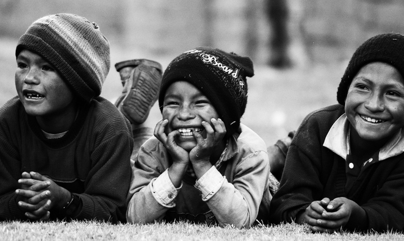

Difundir las costumbres y tradiciones, para que las generaciones presentes
y futuras conozcan la historia de los pueblos.
Culture-oriented Business Sponsorship
Buscar el apoyo de las empresas de turismo cultural,
buscando que sea clave para la conservación de la identidad.

Cultural Heritage Research
Contar con investigaciones para generar estrategias para el cuidado
y rescate de los pueblos indígenas. Se busca engrandecer la cultura, el idioma, las tradiciones y
todo aquello que rodea a dichas comunidades.
Culture-911.org
Un sitio web para que el usuario debidamente registrado pueda colocar
las costumbres, tradiciones y otros elementos de su identidad cultural para responder las
preguntas: ¿Por qué es importante trabajar la identidad cultural de cada pueblo? ¿Cómo
reforzar la identidad cultural en el pueblo? ¿Cuál es el origen de sus tradiciones y
folclore? ¿Se reconoce la Identidad cultural en el sistema educativo de su comunidad?
¿Hay alguna construcción en su comunidad que debería ser considera un patrimonio
cultural?.
Una aplicación móvil que permita registrar en una base de datos, las
tradiciones, leyendas, costumbres que una persona escucha o le informan cuando hace
turismo por una zona, asimismo debe permitir registrar en google maps el punto donde
encontró dicha valiosa información.
Una aplicación móvil dirigida a los operadores turísticos para que
puedan ofertar paquetes turísticos que respeten y refuercen la identidad cultural, tales
como viajes organizados para visitar museos de sitio o parques arqueológicos,
gastronómico: vinculado a la comida tradicional del destino turístico, enológico:
vinculado a los vinos de una zona (también llamado Turismo del vino), ecoturismo, etc.